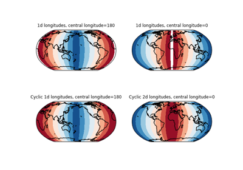
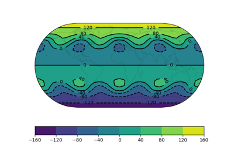
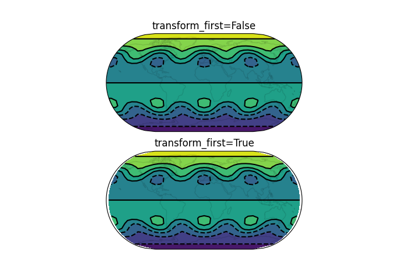
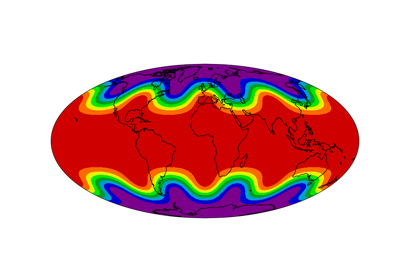
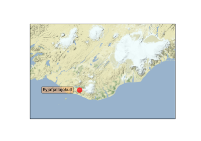
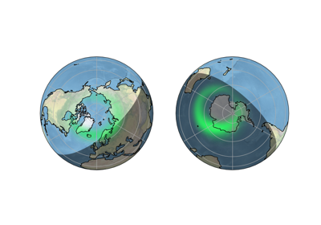
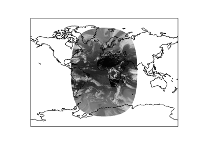

Scalar data#

Adding a cyclic point to help with wrapping of global data
Adding a cyclic point to help with wrapping of global data

Contour labels

Contour transform options

Filled contours

Map tile acquisition

Plotting the Aurora Forecast from NOAA on Orthographic Polar Projection
Plotting the Aurora Forecast from NOAA on Orthographic Polar Projection

Reprojecting images from a Geostationary projection
Reprojecting images from a Geostationary projection